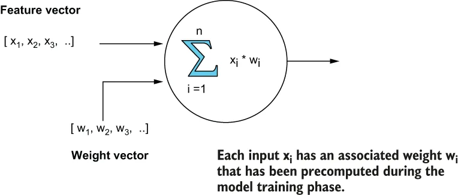

Neural nets are designed to recognize patterns in data, and they learn to do this by analyzing large training datasets. The process of training a neural net involves using a training dataset to determine the proper model weights for each node in the network. The training sets are often labelled, so the expected outputs are known in advance, and then the weights are adjusted until the model produces the expected results. Therefore, it is important to remember that these weights are critical to the performance and accuracy of the models.
神经网络被设计用来识别数据中的模式，而它们学会做这件事的方式，是分析大规模的训练数据集。训练一个神经网络的过程，涉及用一个训练数据集来为网络中的每个节点确定适当的模型权重。这些训练集往往带有标注，因此预期输出是事先已知的；随后权重会被不断调整，直到该模型产出预期的结果为止。因此，务必记住一点：这些权重对于模型的性能与准确度是至关重要的。
The first step is to train a model using the Keras library in Python using your training data, as shown in listing 11.8. The input to the model shown is ten binary features that describe the various features of a food order, such as average order price of the customer, the distance between the customer’s home address and the delivery address of the order, and other features. The output is a single variable that describes the probability that the order is fraudulent.
第一步是用 Python 中的 Keras 库、拿你的训练数据来训练一个模型，如清单 11.8 所示。所示模型的输入是十个二元特征，它们描述了一笔餐品订单的各个侧面，例如该客户的平均订单价格、客户家庭住址与该订单配送地址之间的距离，以及其他一些特征。其输出是一个单一的变量，描述了这笔订单存在欺诈的概率。
Listing 11.8 Training the neural net using Python
import keras
from keras import models, layers ❶
# Define the model structure
model = models.Sequential() ❷
model.add(layers.Dense(64, activation='relu', input_shape=(10,)))
...
model.add(layers.Dense(1, activation='sigmoid'))
model.compile(optimizer='rmsprop',loss='binary_crossentropy',
metrics=[auc])
history = model.fit(x, y, epochs=100, batch_size=100,
validation_split = .2, verbose=0) ❸
model.save("games.h5") ❹
❶ Use the Keras libraries.
❶ 使用 Keras 的各个库。
❷ Define the model structure.
❷ 定义模型结构。
❸ Compile and fit the model.
❸ 编译并拟合这个模型。
❹ Save the model in H5 format.
❹ 以 H5 格式保存这个模型。
As you can see in figure 11.7, each node inside a neural net takes in a feature vector as input along with a set of weights associated with each feature. These weights allow us to assign more importance to some features than to others when generating our prediction, such as the distance between the delivery address of the order and the customer’s home address. If that feature is a good indicator of a fraudulent transaction, then it should have a higher weight. The process of training and fitting the model yields a set of optimal weights for each input node in the neural net.
从图 11.7 中可以看到，神经网络内部的每一个节点都接收一个特征向量作为输入，并同时接收一组与各个特征相关联的权重。这些权重让我们在生成预测时，能够给某些特征赋予比其他特征更高的重要性，例如该订单配送地址与客户家庭住址之间的距离。如果这个特征能很好地指示一笔交易是否欺诈，那么它就应当被赋予更高的权重。训练和拟合这个模型的过程，会为神经网络中的每一个输入节点产出一组最优权重。

Figure 11.7 Each node in the neural net takes a feature vector as input along with a precomputed set of weights that are associated with each feature. These weights are calculated during the model training phase and are critical to the accuracy of the neural net.
图 11.7 神经网络中的每个节点都接收一个特征向量作为输入，并同时接收一组与各个特征相关联的、预先计算好的权重。这些权重是在模型训练阶段被计算出来的，对神经网络的准确度至关重要。
Once the model has been properly trained (i.e., you have calculated the optimal weights for each input node) and is ready to deploy, you can save it in a specialized Keras-specific format known as H5. This format retains the complete models, including the architecture, weights and training configuration, whereas Keras models exported to JSON format only contain the model architecture but not the calculated weights. Therefore, be sure to always use the H5 format when exporting your Keras-based neural nets.
一旦这个模型被妥善训练好（也就是说，你已经为每个输入节点算出了最优权重）并准备好部署，你就可以把它保存成一种 Keras 特有的专门格式，即 H5。这种格式保留了完整的模型，包括架构、权重和训练配置；而被导出为 JSON 格式的 Keras 模型则只包含模型架构，而不包含那些计算出来的权重。因此，在导出你基于 Keras 的神经网络时，务必始终使用 H5 格式。